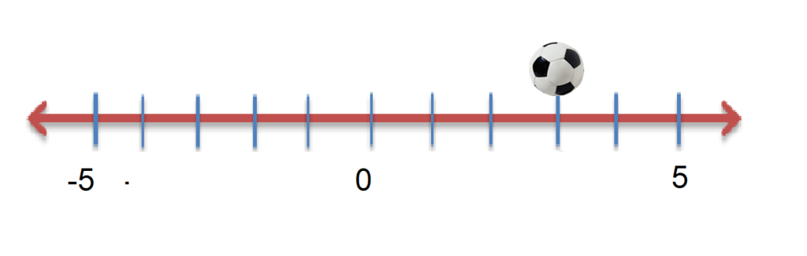

The Reign of Numbers Never Ends
Once upon a time, in the very fabric of reality, there existed an infinite expanse of emptiness that stretched as far as the eye could see in both directions. This was the Realm of Numbers, a place of pure logic and order, and at its heart lay the most significant of all mathematical entities: the Number Line. The Number Line was not a mere sequence of marks on a board but a living, breathing tapestry of numerical truth, which whispered the secrets of the universe to those who dared to listen. It was said that whoever truly understood the Number Line could unlock the mysteries of time, space, and existence itself. Now, let me take you on a journey along this mystical Line. Imagine a point—a dot, unassuming and small. This dot is named Zero, the guardian of balance, sitting at the very center of the Number Line. Zero is neither positive nor negative; it's the sentinel of neutrality, the starting point of all adventures in this numeric realm. To the right of Zero, there's a merry gang of Positive Numbers. They represent all the good things that you can count on your fingers - such as apples in a basket or the number of steps you take on a sunny day stroll. These positive integers - 1, 2, 3, and onwards - are always having a party, each one a little louder and bigger than the one before it. The Positive Numbers cheers echoed in the ears of Mathematicians, who would often tinker with these joyful digits, creating equations and formulas that would explain the movements of stars or the growth of populations. Pythagoras, Euclid, and Descartes were among those who frequented the meetings where the Positive Numbers congregated, drawing inspiration for their theorems and axioms.
Date: 12/12/2023
However, to the left of Zero, there is another crew, the Negative Numbers. They are the representation of debts owed, the chill of winter's frost, and they are as necessary to the balance of the universe as their positive counterparts. They might sound less friendly, but without them, the concept of loss or absence couldn't be understood, nor could we calculate temperature below freezing or quantify the depth beneath sea level. The Negative Numbers were undeniably shrouded in mystery, and the Mathematicians approached them with a mix of respect and awe. They found beauty in the symmetry these numbers created with their positive siblings, like a mirror reflecting an endless corridor. Every point on the Number Line is a stop on this highway of infinity, and it has its unique properties. No mathematician ever reaches the end of it, for it stretches endlessly in both directions, a line that tells the story of everything that was, is, and could ever be. Let's not forget the fractions and the irrationals. These are the whispers, the secretive numbers that fill the spaces between our loud, boastful integers. Numbers like 1/2 and √2 move like shadows, creating a dense, infinitely intricate pattern within the tapestry of the Number Line. These numbers speak to the spaces within and between, to the idea that no matter how close two things are, there is always, always something in between. A great mathematician named Newton found inspiration in this very concept when he invented calculus. The mysteries of motion and change, the very elements of the universe that once seemed untouchable and out of reach, were suddenly unraveling before the eyes of humanity. The Number Line, in its entirety, is the backbone of mathematical storytelling, with its infinite tales and its unwavering truth. For the students, it's a playground of possibilities. For the mathematicians, it's an enigma that continues to challenge and inspire, a bridge between the simplicity of counting and the complexities of advanced theories. And so the Number Line stretches on forever, silent and omnipresent, a universal language speaking the truth of numbers to anyone who's willing to learn its ways. From the mind of a child counting pebbles to the chalkboards of genius mathematicians solving equations that dance along its path, the Number Line is the quiet hero of the mathematical world, waiting to be explored and adored, simple enough for all to understand and yet profound enough to keep a mathematician hooked for a lifetime.
The Progression of Negative Numbers
The story of negative numbers is a fascinating journey through history, mathematics, and cultural attitudes towards the concept of “less than nothing.” The earliest recorded use of negative numbers was in China, where they appeared in “The Nine Chapters on the Mathematical Art” (Jiu Zhang Suan Shu), a Chinese text from the Han dynasty (202 BC – 220 AD). The Chinese used red rods to represent positive coefficients and black rods for negative ones in their counting boards, a practice which conceptualized negatives as debts or deficits. Continue reading
Date: 12/01/2023
The Cartesian Plane
The Cartesian coordinate plane is a fundamental element of modern mathematics, named after René Descartes (Latinized: Cartesius), who formalized its use in the 17th century. The creation of this coordinate system was a crucial development in mathematical history because it provided a bridge between algebra and geometry—a connection that enabled modern analytic geometry. Continue reading
Date: 11/10/2023
The Power of Mighty Rate
The concept of rate is a fundamental mathematical tool that has profound implications and applications in the real world. A rate, in its most general sense, is a measure of how one quantity changes with respect to another. It is a comparative measure that can help understand relationships and dynamics in various fields of studies and everyday life situations. Here are several realms where the importance of rate is particularly evident: Continue reading
Date: 10/05/2023
Geometry and the World
Geometry, as a branch of mathematics, plays a pivotal role in explaining and understanding the world around us. It provides a visual and quantitative language for describing spatial relationships, physical structures, and natural patterns, enabling a broad range of applications that are essential to daily life and scientific progress. Here are several ways in which geometry helps to explain the world: Continue reading
Date: 09/03/2023